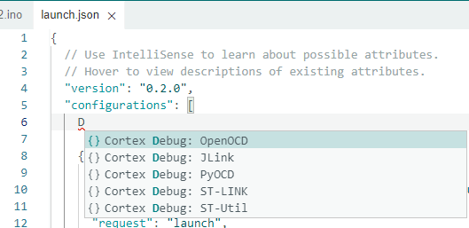
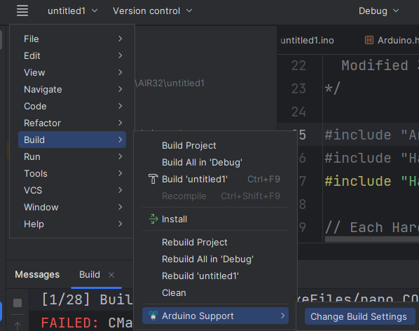
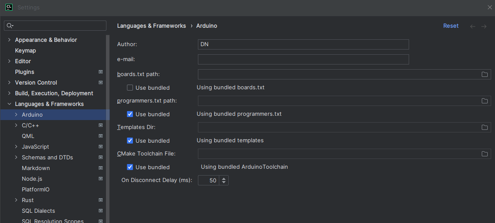

AIR001-Clion/VScode优雅环境配置
本文最后更新于 2024年2月5日 下午
AIR001-Clion/VScode优雅环境配置
合宙是真会和工程师打关系啊，没事看看合宙公众号看有没有新活动已经是日常了，，
合宙这AIR001没套stm32的模板，我也不知道该说是好事还是坏事了属于，，（不过也是HAL库）
这篇文章几乎是踩坑，以供参考。
本文尝试配置了
| 环境 | 基于 | 推荐度 | 本文章 |
|---|---|---|---|
| Arduino support-Clion环境 | 老版Arduino | 1% | 尝试失败 |
| VScode-Arduino环境 | Arduino CLI | 30% | 基本成功 |
| HAL-CMake-Clion-PyOCD环境 | armgcc-Cmake | 90% | 成功 |
| 借用py32的makefile | armgcc-makefile | - | - |
截止至2023年9月30日，PlatformIO不支持Air001.详情：需要有人适配platfromIO · Issue #4 · Air-duino/Arduino-AirMCU
AIR001
合宙Air001是一款TSSOP20封装的MCU，采用高性能的32位ARM®Cortex®-M0+内核，最大48Mhz，内置32Kbytes的Flash和4Kbytes的RAM。芯片集 成多路USART、IIC、SPI等通讯外设，5个16bit定时器以及1路12bit ADC和2路比较器。
我也好奇合宙的命名，以后不打算做同系列产品了嘛，直接叫Air001，我还是挺期待LQFP32、QFN32产品，因为tssop20的引脚总是不够用。
其实，AIR001是py32f002A/py32f003/py32f030的贴牌同源产品。py（普冉）是最近几年卷m0核市场的，它自己的三个系列（002A/003/030）就是同一块晶圆，通过HAL库和封装来实现区分。所以，网上才有002A开PLL，开USART2,开内存等操作。py32的贴牌同源产品不只有air001，还有XL32f002（芯岭，普冉一级代理）等。
虽然py32f002A比air001便宜，前者tssop20才六毛钱不到，但是论标注保证性能，air001是py32f030级别的。py32f030大概一块钱，air001 0.76元。要是用py32f002A datasheet里面没有的功能和性能，出了问题也没法不是？
Arduino
我个人是不太喜欢Arduino风格，不过，用Arduino可以少学一套API，又有一大堆库可用。
Arduino AIR001适配（社区项目Air-duino），看commit，基本是半糖做的，我一直以为半糖是合宙的人，后来才知道是大学生，我以为合宙会开点赞助，在群里问了问，只赞助了点开发板和技术支持，，感觉有点，，AIR001可是用Arduino支持做了宣传的啊
另一个贡献者是晨旭，应该是合宙的人。
半糖这大佬是真牛。
因为PlatformIO不支持Air001，就只能配置Arduino插件。
调试器
Air001目前并不支持openDCD，支持pyOCD。
pyOCD的易用性也不错，而且支持CMSIS PACK，直接挂上CMSIS PACK就能跑。
不过，air001也进了pyOCD的develop分支：Pull Request #1612 by kaidegit
Arduino似乎是不支持pyOCD，这是半糖提的Issue：
Using PyOCD as a debugger · Issue #2193 · arduino/arduino-ide (github.com)
所以这东西似乎是假的，，，
Arduino support-Clion环境
写了一半的教程删了，踩坑如下：
1.需要手动在CMake文件设置set(ARDUINO_SDK_PATH D:/Develop/arduino-1.8.19)
2.必须在这个cmake（\cmake\ArduinoToolchain.cmake）前面设置ARDUINO_SDK_PATH，在CMakeLists.txt文件里设置会发生奇怪的报错
3.Arduino support插件只支持老版本aurduino，不支持新出的ArduinoIDE（Arduino CLI），他会提示你版本不支持
4.Arduino support并不能自动加载你安装的库，需要手动导入boards.txt，查了半天才查出来
5.arduino support 设置在这种鬼地方：
6.Arduino自动将芯片包和库装在C:\Users\xxx\AppData\Local\Arduino15\下，找了半天，，而且不能通过设置修改位置（虽然能修改）
7.arduino support插件只支持一个boards.txt，切换不同的厂商还需要自己改boards.txt，逆天
8.board.txt在这种这么深的路径，还要你手动设置，还只能一次设置一个：C:\Users\xxx\AppData\Local\Arduino15\packages\AirM2M\hardware\AirMCU\0.2.3
9.编译又出问题了：

这还玩**，我宝贵的三个小时。。

Uninstall…
VScode-Arduino环境
1.Arduino配置
先看这个做到能烧录。比较简单
Air001基于Arduino的用户手册 - LuatOS 文档
2.插件配置
vscode中安装这个插件。

打开vscode设置（快捷键ctrl+,），找到arduino configuration
别的啥都不用管，把这个Use Arduino CLI给开开就行，不用填路径！
不然你需要安装旧版Arduino才行。

然后打开一个用Arduino创建的项目（文件名和路径不能有中文、空格）。在右下角设置板子型号之类的信息。

在这里尝试编译烧录：

不出意外的话会出现这样一个warn：

添加"output": "./Arduino/build",

注意：若你的编译或者上传出现这样的错误：

请将刚才改的路径修改下：

这个bulid路径不知道为什么特别严格，好像连纯ANSCII都不行，必须全英语小写（或者有长度限制）真是坑人。
更坑人的是，无论烧录是否成功，都告诉你Done.

不知道怎么解决了。。。我只连一个烧录器，单片机都不连，都能Done…只能说佩服这插件了。
波浪线问题解决：
(60条消息) 使用Visual Studio Code开发Arduino踩坑日记(持续更新)_鸿神的博客-CSDN博客
HAL-CMake-Clion-PyOCD环境
有人造过轮子了：
kaidegit/air001-cmake (github.com)
直接用就成。
该仓库新的commit已经集成pyOCD命令，安装好直接用就成。下面的不一定要整。
Clion支持pyOCD，参考：https://www.jetbrains.com/help/clion/embedded-gdb-server.html
python安装pyocd后
在此处即可添加配置。pyocd.exe在python安装目录/scripts下。
可以选通用的cortex-m，即可调试。
但是若下载+调试，需要使用Keil Pack文件。
一个可用的配置是这样的：
1 | |
此外：
可以将target改为m0plus，我不知道改了有什么好处，但是Air001是m0+内核，用m0plus应该好些（也可能也是个摆设
然后armgcc，目前（2023年9月30日）的版本最高可以支持到C++standard 26，可海星、
借用py32的makefile
上面已经说过，AIR001是py32f002A/py32f003/py32f030的贴牌同源产品，所以可以借用它的HAL库。有人已经做了makefile，gccarm的template：
选择py32f002A/003/030就行。
打算以后学学Rust，主要是，c语言实在太古老，的语言层级抽象度实在太低。Rust还有统一的包管理，以及比较统一的嵌入式trait。
C++不是很想学，特性山嘛。